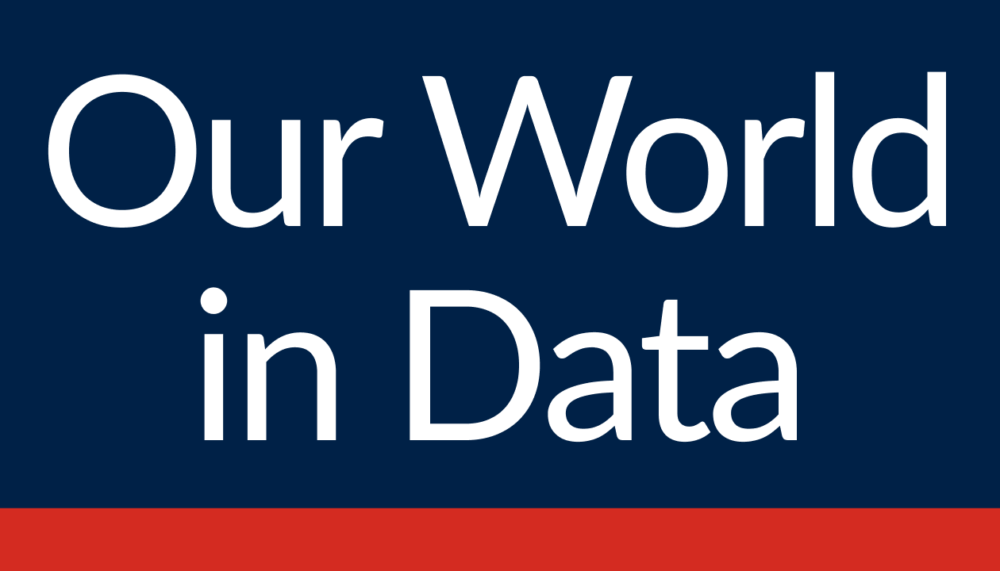

Data Sources

Global Oil Production
- Oil production by Country and by Year.
- Inormation from 1900 to 2022.
- The unit of analysis is Terawatt-Hour (TWh).
- The most relevant information is the top 5 countries with more production over time.
U.S. Oil Production
- Oil production by Month and by Year.
- Inormation from 1920 to 2022.
- The unit of analysis is Thousand Barrels.

Crude Oil Price (CL=F)
- Crude Oil Price by Day, by Month and by Year.
- Information from 2000 to 2022.
- The unit of analysis is the price of the barrel in U.S Dollars.
Organisation for Economic Co-operation and Development
Inflation Rate
- U.S. Inflation from the Consumer Price Index variations by Month and by Year.
- Information from 1956 to 2022.
- The unit of analysis is variations in decimal points.

Interest Rate
- U.S. Interest Rates by Year.
- Information from 1994 to 2022
- The unit of analysis is U.S. Dollars

Food Industry
- U.S. Food Production by Quarter and by Year.
- Information from 2005 to 2022.
- The unit of analysis is billions of U.S. Dollars.
Pharmaceuticals Industry (Healthcare Index - IYH)
- U.S. Healthcare investment results of an index composed of U.S. equities in the sector by Day, by Month and by Year.
- Information from July 2000 to December 2022.
- The unit of analsysis is U.S. Dollars.
Bus Transport - Passenger Trips
- Number of Bus Trips by Month and by Year.
- Information from 2002 to 2022.
- The unit of analysis is millions of Trips.
Air Transport - Personal Consumption Expenditures
- Personal Consumption Expenditures on Air Transport by Month and by Year.
- Information from 1959 to 2022.
- The unit of analysis is millions of U.S. Dollars.
Bicycles - Personal Consumption Expenditures
- Personal Consumption Expenditures on Bicycles and Accesories by Month and by Year.
- Information from 1959 to 2022.
- The unit of analysis is millions of U.S. Dollars.